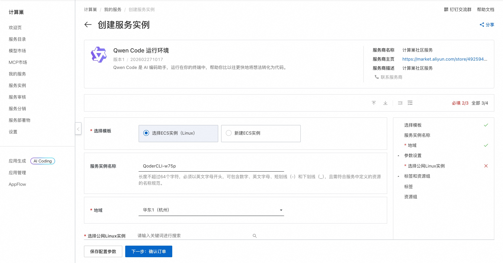
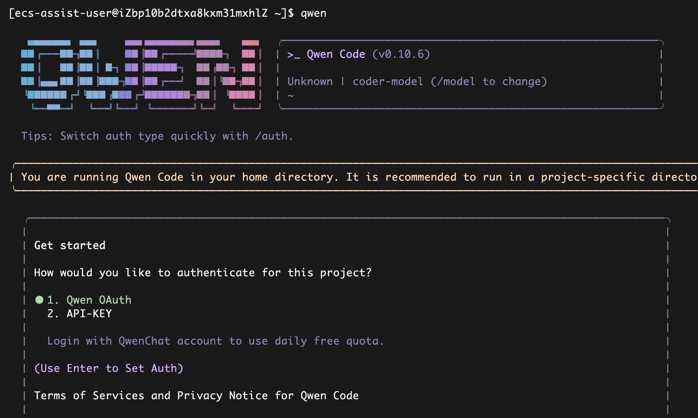

🌟 服务简介
💥 告别重复编码，让 AI 成为你的超级副驾！
Qwen Code 不只是工具——它是通义千问家族专为开发者打造的智能编程引擎，深度理解项目上下文，一行指令即可生成高质量代码、单元测试、文档注释与逻辑解释。开发效率飙升 300%，代码质量肉眼可见提升！
Qwen Code 是基于通义千问大模型的开源代码智能助手，支持 Python、Java、JavaScript、Go、TypeScript 等主流语言。它能自动补全函数、修复 Bug、生成测试用例、解释复杂算法，并通过 CLI 或 IDE 插件无缝融入你的开发流程，真正实现“所想即所得”的智能编程体验。
🚀 部署流程
⚡ 5 分钟极速上线，无需配置，开箱即用！
借助阿里云计算巢，一键部署 Qwen Code 社区版，省去 Python 环境、依赖库、模型下载等繁琐步骤，立即获得本地化智能编程能力！
-
访问计算巢 Qwen Code 社区版 部署链接，按页面提示填写部署参数（如实例名称、地域）：

-
参数配置完成后，系统将自动生成费用预估明细。建议选择 ≥2核4GB 配置以保障推理流畅性，确认无误后点击 下一步：确认订单。
-
在订单确认页，核对实例信息与费用，点击 立即创建 开始自动部署。
-
部署完成后，远程连接ECS，执行 qwen 开始使用：

📚 使用指南
使用请参考 Qwen Code 官方文档 了解完整命令列表、示例及最佳实践。
© 2009-2022 Aliyun.com 版权所有